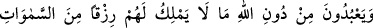
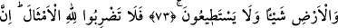
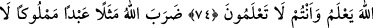
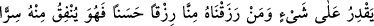
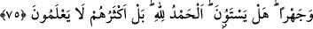
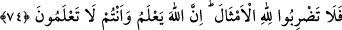

ALLAH’A BENZERLER
ÎCAD ETMEYİN
73. (Müşrikler) Allah’ı bırakıp da kendilerine göklerde ve yerde olan rızıktan
hiçbir şey veremeyen ve buna asla güçleri yetmeyen şeylere (putlara) tapıyorlar.
74. Allah’a birtakım benzerler îcâd etmeyin. Çünkü Allah (her şeyi) bilir, siz ise
bilemezsiniz.
75. Allah, hiçbir şeye gücü yetmeyen, başkasının malı olmuş bir köle ile
katımızdan kendisine verdiğimiz güzel rızıktan gizli ve açık olarak harcayan (hür)
bir kimseyi misal verir. Bunlar hiç eşit olurlar mı? Doğrusu hamd Allah’a mahsustur.
Fakat onların çoğu (bunu) bilmezler.
“(Müşrikler) Allah’ı bırakıp da kendilerine göklerde ve yerde olan rızıktan hiçbir
şey veremeyen” ne gökten yağmur yağdırmağa, ne de yerden ot bitirmeye, onlardan size
herhangi bir rızık vermeye muktedir olamayan “ve buna asla güçleri yetmeyen şeylere”
ilahlara “tapıyorlar.” Onlar buna asla güç yetiremezler. Çünkü onlar cansız
varlıklardır.
74. Allah’a birtakım benzerler îcâd etmeyin. Çünkü Allah (her şeyi) bilir, siz ise
bilemezsiniz.
“Allah’a birtakım benzerler îcâd etmeyin.” Yarattıklarından herhangi bir şeyi
Allah’a benzetip ona ortak koşmayın. Darb-ı mesel demek, bir hali başka bir hâle, bir
kıssayı başka bir kıssaya benzetmek demektir. Allah hakiki tek ilahtır, ezelî ve ebedî
olarak bir benzeri yoktur.
O’nun zâtını tasavvura imkân yoktur